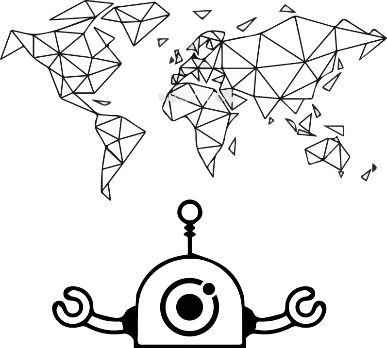

<ion-content [fullscreen]="true">
    <div class="d-flex align-item">
        <div class="txt-center">
            
        </div>
        <ion-row>
          <ion-col *ngFor="let idx of [3,2,1]">
            <div *ngIf="idx <= gameService.getLifes()" class="txt-center">
                
            </div>
            <div *ngIf="idx > gameService.getLifes()" class="txt-center">
              
            </div>
          </ion-col>
        </ion-row>
        <div class="txt-center">
           Votre score est de : {{gameService.getPoint()}}
        </div>
        <ion-button (click)="restart()">Restart</ion-button>
      </div>
</ion-content>
